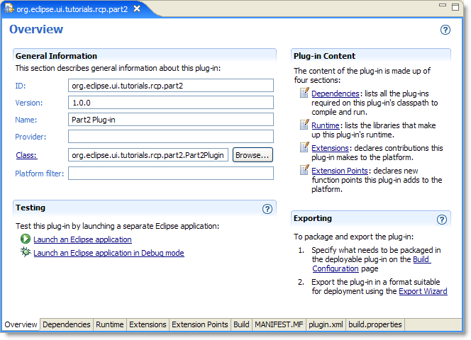

| Eclipse Article |

The Rich Client Platform (RCP) allows you to build Java applications that can compete with native applications on any platform. Part 1 of the tutorial introduced you to the platform and the steps used to build the smallest possible RCP program. In part 2 we'll look at what we did in more detail and introduce some of the configuration classes that let you take control of much of the layout and functionality of an RCP application. This part has been updated for Eclipse 3.1.2
By Ed Burnette, SAS
August 9, 2004
Updated for 3.1.2: February 6, 2006
In early versions of Eclipse, many functions of the IDE were hard-wired into the code. These included the name and location of the File menu, the title of the Workbench Window, and the existence of the status bar. This was fine for the IDE but when people started to use Eclipse as a basis for non-IDE programs, sometimes these things didn't make sense. Although all the source code was provided, it was inconvenient to find the right places that had to be changed.
So, beginning in Eclipse 3.0, the designers refactored the API to make these and other hard-wired aspects of the user interface controllable through public API. Subsequent releases have fine tuned that API and provided tooling in the Plug-in Development Environment (PDE) to lower the barriers to getting started using it. However, you'll eventually need to look behind the PDE wizards and editors to really understand what is going on.
In this part we'll examine the code and configuration files created in Part 1 of the tutorial. To keep the parts separate I've recreated the examples for each part under a different name. All the sample code for Part 2 may be found in the part2.zip archive file.
 If
you're following along with this tutorial in Eclipse and you're thinking
of just renaming your old project, I don't recommend it. In Eclipse 3.1,
Refactor > Rename does not work well on plug-in projects due to all
the internal references in XML files and strings that don't participate.
Hopefully this will be fixed in a future release.
If
you're following along with this tutorial in Eclipse and you're thinking
of just renaming your old project, I don't recommend it. In Eclipse 3.1,
Refactor > Rename does not work well on plug-in projects due to all
the internal references in XML files and strings that don't participate.
Hopefully this will be fixed in a future release.
Before we go any further let's clear up some possible confusion about the relationship between Applications, Workbenches, and Workbench Windows.
The Application is a class you create that acts as your RCP program's main routine. You can think of it as the controller for the program. Just like the controller in a Model2 architecture, it is short and sweet and doesn't change significantly for different projects. All it does is create a Workbench and attach another class called a Workbench Advisor to it (Workbench Advisors will be covered more later).
The Workbench is declared and maintained for you as part of the RCP framework. There is only one Workbench but it can have more than one visible top-level Workbench Window. For example, in the Eclipse IDE, when you first start Eclipse you will see one Workbench Window, but if you select Window > New Window a second window pops up -- two Workbench Windows, but only one Workbench.
Ok, now that that's out of the way, let's see what those PDE wizards did for us, starting with the plug-in manifest.
The plug-in manifest ties all the code and resources together. When you first create a plug-in, Eclipse will create and open the manifest for you automatically. The manifest is split into two files: MANIFEST.MF and plugin.xml. PDE provides a fancy editor to modify the options stored in these files (see Figure 1) but also allows you to edit the source directly.
Figure 1. The plug-in manifest editor provides a single interface for editing the manifest and related files. The tabs along the bottom of the editor access all the different sections in the GUI or the raw text files.
The OSGi bundle manifest is stored in MANIFEST.MF. OSGi is the name of a standard that Eclipse uses for dynamically loading plug-ins (see refererences). Listing 1 shows the OSGi bundle manifest generated by the plug-in wizard. Everything in this file can be edited by the Manifest editor, so there should be no need to edit it by hand. However if you need to, just double-click it in the Package Explorer to bring up the Manifest editor, then click on the MANIFEST.MF tab in the editor to see and modify the source.
 For backwards compatability with Eclipse 2.1, Eclipse will recognize and
load plug-ins that do not use MANIFEST.MF. However, this incurs a small
performance penalty and is not recommended for plug-ins targeting
Eclipse 3.0 and later.
For backwards compatability with Eclipse 2.1, Eclipse will recognize and
load plug-ins that do not use MANIFEST.MF. However, this incurs a small
performance penalty and is not recommended for plug-ins targeting
Eclipse 3.0 and later.
Listing 1. MANIFEST.MF
Manifest-Version: 1.0 Bundle-ManifestVersion: 2 Bundle-Name: Part2 Plug-in Bundle-SymbolicName: org.eclipse.ui.tutorials.rcp.part2; singleton:=true Bundle-Version: 1.0.0 Bundle-Activator: org.eclipse.ui.tutorials.rcp.part2.Part2Plugin Bundle-Localization: plugin Require-Bundle: org.eclipse.ui, org.eclipse.core.runtime Eclipse-AutoStart: true
The Eclipse extension manifest is called plugin.xml. It's used for defining and using Eclipse extension points, so if you're not using extension points then this file may be omitted. Extension points are the fundamental way that Eclipse plug-ins are tied together so if you're not familiar with them see one of the articles in the Reference section. Listing 2 shows the plugin.xml file created by the PDE wizard.
Listing 2. plugin.xml
<?xml version="1.0" encoding="UTF-8"?>
<?eclipse version="3.0"?>
<plugin>
<extension
id="application"
point="org.eclipse.core.runtime.applications">
<application>
<run
class="org.eclipse.ui.tutorials.rcp.part2.Application">
</run>
</application>
</extension>
<extension
point="org.eclipse.ui.perspectives">
<perspective
name="Part2 Perspective"
class="org.eclipse.ui.tutorials.rcp.part2.Perspective"
id="org.eclipse.ui.tutorials.rcp.part2.perspective">
</perspective>
</extension>
<extension
id="product"
point="org.eclipse.core.runtime.products">
<product
application="org.eclipse.ui.tutorials.rcp.part2.application"
name="RCP Tutorial 2"/>
</extension>
</plugin>
The class name of the main program is defined with the org.eclipse.core.runtime.applications
extension.
 Although it's not an absolute requirement, I recommend keeping your id's
and your class names the same except possibly for case. For historical
reasons, Eclipse prepends the plug-in's id to the id of your top level
plug-in elements (like
Although it's not an absolute requirement, I recommend keeping your id's
and your class names the same except possibly for case. For historical
reasons, Eclipse prepends the plug-in's id to the id of your top level
plug-in elements (like extension). For example, even though
the plugin.xml in listing 2 says id="application", the
fully qualified id for that extension is org.eclipse.ui.tutorials.rcp.part2.application.
Since the perspective's id is written on a sub-element (perspective)
it has to be spelled out completely in the manifest (org.eclipse.ui.tutorials.rcp.part2.perspective).
By convention only, package names and ids are lower case and class names are Pascal Case.
The org.eclipse.core.runtime.applications extension
tells the Eclipse runtime the name of your main program. This is a class
that implements IPlatformRunnable and a run()
method. Listing 3 shows the simple implementation supplied by the
plug-in wizard.
Listing 3. Application.java
package org.eclipse.ui.tutorials.rcp.part2;A Perspective is a set of visible views, editors, and menus including
their positions and sizes. In an RCP program you must define at least
one perspective and make it the default. Perspectives are created by
implementing IPerspectiveFactory using the class name
referred to by the org.eclipse.ui.perspectives extension.
See Listing 4 for the implementation provided by the plug-in wizard. The
important part of this interface is the createInitialLayout()
method where you position and open any views and/or editors you'd like
the user to start with. So far in this example we haven't created any
views so it's a pretty boring perspective.
Listing 4. Perspective.java
package org.eclipse.ui.tutorials.rcp.part2;The main program referenced a class called ApplicationWorkbenchAdvisor.
This is one of three Advisor classes that you use to configure all
aspects of the Workbench such as the title, menu bars, and so on. These
are the most important classes for an RCP developer to understand.
You extend the base version of the class, for example WorkbenchAdvisor,
in your RCP application and override one or more of the methods to set
whatever options you want. Let's examine these classes now in more
detail.
Methods in this class are called from the platform to notify you at
every point in the lifecycle of the Workbench. They also provide a way
to handle exceptions in the event loop, and provide important parameters
to the Workbench such as the default perspective. With the exception of
createWorkbenchWindowAdvisor() and getInitialWindowPerspectiveId(),
the methods on WorkbenchAdvisor do not have to be
overridden. Listing 5 shows the implementation that was provided by the
plug-in wizard.
Listing 5. ApplicationWorkbenchAdvisor.java
package org.eclipse.ui.tutorials.rcp.part2; Why not an interface? You'll notice that
Why not an interface? You'll notice that WorkbenchAdvisor
is an abstract class. For the most part, Eclipse APIs shun abstract
classes in favor of interfaces and base classes that implement those
interfaces. In this case, the designers intend for WorkbenchAdvisor
to always be implemented by the RCP application, and the base
class doesn't contain any significant functionality. Also it is very
likely that new methods will need to be added to the base class in the
future (something that is difficult using interfaces). So this was a
deliberate design choice. See the article on evolving Java APIs in the
reference section for more tips.
The Workbench Advisor class has several methods that are called at defined points in the Workbench's lifecycle (see Table 1). By overriding these you can run whatever code you want at these points.
Table 1. Workbench lifecycle hooks provided by WorkbenchAdvisor.
| Method | Description | Parameter(s) |
|---|---|---|
| initialize | Called first to perform any setup such as parsing the command line, registering adapters, declaring images, etc.. | IWorkbenchConfigurer |
| preStartup | Called after initialization but before the first window is opened. May be used to set options affecting which editors and views are initially opened. | |
| postStartup | Called after all windows have been opened or restored, but before the event loop starts. It can be used to start automatic processes and to open tips or other windows. | |
| preShutdown | Called after the event loop has terminated but before any windows have been closed. | |
| postShutdown | Called after all windows are closed during Workbench shutdown.
This can be used to save the current application state and clean up
anything created by initialize. |
The event loop is the code that is running most of the time during the life of the Workbench. It handles all user inputs and dispatches them to the right listeners. RCP provides a couple of hooks to handle crashes and perform work during idle time (see Table 2). Note however that the Jobs interface (see References) is a better way of performing long running work than this idle hook.
Table 2. Event loop hooks provided by WorkbenchAdvisor.
| Method | Description | Parameter(s) |
|---|---|---|
| eventLoopException | Called if there is an unhandled exception in the event loop. The default implementation will log the error. | Throwable |
| eventLoopIdle | Called when the event loop has nothing to do. | Display |
Next, there are few methods you can implement that the platform will
call to get information about your application (see Table 3). The most
important one (and the only one that is not optional) is getInitialWindowPerspectiveId.
We used this in Listing 5 to return the id of the starting perspective.
Table 3. Information request methods you can override in WorkbenchAdvisor.
| Method | Description | Parameter(s) |
|---|---|---|
| getDefaultPageInput | Return the default input for new workbench pages. Defaults to null. | |
| getInitialWindowPerspectiveId | Return the initial perspective used for new workbench windows. This is a required function that has no default. | |
| getMainPreferencePageId | Return the preference page that should be displayed first. Defaults to null, meaning the pages should be arranged alphabetically. |
The WorkbenchAdvisor events above should be sufficient
for most applications, but just in case, RCP provides another method to
take complete control of how your application windows and controls are
created. It's listed in Table 4 for completeness but I don't expect many
programs will need it.
Table 4. Advanced methods in org.eclipse.ui.application.WorkbenchAdvisor.
| Method | Description | Parameter(s) |
|---|---|---|
| openWindows | Open all Workbench windows on startup. The default implementation tries to restore the previously saved workbench state. |
This class is used to control the status line, toolbar, title, window size, and other things you'll almost certainly want to customize. You can also use it to hook into all the various lifecycle events of the Workbench Windows. Listing 6 shows the implementation provided by the plug-in wizard.
Listing 6. ApplicationWorkbenchWindowAdvisor.java
package org.eclipse.ui.tutorials.rcp.part2;Methods on WorkbenchWindowAdvisor (see Table 5 and Table 6) will all
need access to a Configurer interface (in this case, IWorkbenchWindowConfigurer)
in order to do anything so they're expected to call getWindowConfigurer()
to fetch it. You call methods on the Configurer interfaces to actually
change the options. These interfaces are not covered in any detail in
this tutorial but you can refer to their Javadoc for more information.
Table 5. Workbench window lifecycle hooks provided by WorkbenchWindowAdvisor.
| Method | Description | Parameter(s) |
|---|---|---|
| preWindowOpen | Called in the constructor of the Workbench Window. Use this method to set options such as whether or not the window will have a menu bar. However none of the window's widgets have been created yet so they can't be referenced in this method. | |
| postWindowRestore | Optionally called for cases when a window has been restored from saved state but before it is opened. | |
| postWindowCreate | Called after a window has been restored from saved state or created from scratch but before it is opened. | |
| openIntro | Called immediately before a window is opened in order to create the Intro component (if any). | |
| postWindowOpen | Called right after the Workbench window is opened. Can be used to tweak any of the window's widgets, for example to set a title or change its size. | |
| preWindowShellClose | Called before the Workbench window is closed (technically, before its shell is closed). This is the only function that can veto the close, so it's a good place for an "Are you sure" kind of dialog. | |
| postWindowClose | Called after the Workbench window is closed. Can be used to clean
up anything created by preWindowOpen. |
|
Table 6. Advanced methods in WorkbenchWindowAdvisor.
| Method | Description | Parameter(s) |
|---|---|---|
| createWindowContents | Creates the contents of one window. Override this method to define custom contents and layout. | Shell |
| createEmptyWindowContents | Like createWindowContents, but used when the window
has no open pages. Override this method to show something other than
the default window background. |
Composite |
In Eclipse jargon, "action bar" is a catch-all term for menus, toolbars, and status bars. The ActionBar Advisor handles creating Actions within these locations. A plug-in can also contribute actions dynamically with its plugin.xml file. See Listing 7 for the implementation provided by the plug-in wizard and Table 7 for the methods.
 The
whole action, command and keybinding system is a bit of a mess in
Eclipse 3.1. For example you can't add combo boxes to action bars, and
plugin.xml can't contribute actions to the status bar. Getting key
bindings to work involves multiple steps. Hopefully this will be cleaned
up in a future release.
The
whole action, command and keybinding system is a bit of a mess in
Eclipse 3.1. For example you can't add combo boxes to action bars, and
plugin.xml can't contribute actions to the status bar. Getting key
bindings to work involves multiple steps. Hopefully this will be cleaned
up in a future release.
Listing 7. ApplicationActionBarAdvisor.java
package org.eclipse.ui.tutorials.rcp.part2;Table 7. Methods you can override in ActionBarAdvisor.
| Method | Description | Parameter(s) |
|---|---|---|
| makeActions | Called to create the actions used in the fill methods. | IWorkbenchWindow |
| fillMenuBar | Called to fill the menu bar with the main menus for the window. | IMenuManager |
| fillCoolBar | Called to fill the cool bar with the main toolbars for the window. | ICoolBarManager |
| fillStatusLine | Called to fill the status line with the main status line contributions for the window. | IStatusLineManager |
| isApplicationMenu | Return true if the menu is one of yours. OLE specific; see Javadoc for details. | String |
The plug-in class is an optional singleton class that can be used to store global information for the plug-in. It's also a convenient place to put a few static utility functions used by other classes in the plug-in. See Listing 8 for the plug-in class that was created for us by the plug-in wizard.
Listing 8. Part2Plugin.java
package org.eclipse.ui.tutorials.rcp.part2;The build.properties file (see Listing 9) will be needed when
exporting the application for others to use. In particular if your
application needs any resources like icons they should be listed here in
the bin.includes section. The Plug-in Manifest editor
provides a convenient interface to modify this file that is less
error-prone than modifying it by hand.
Listing 9. build.properties
source.. = src/
output.. = bin/
bin.includes = plugin.xml,\
META-INF/,\
.
In part 2 of this tutorial, we looked at some of the API of the Rich Client Platform that allows you to develop customized native-looking client-side Java programs. The next part will delve into branding and deploying your application so others can use it. All the sample code for this part is included in the part2.zip archive file that accompanies this document.
RCP Tutorial Part 1
RCP Tutorial Part 3
Eclipse Rich
Client Platform
The Equinox
project (OSGi in Eclipse)
How to Internationalize your Eclipse Plug-in
PDE
Does Plug-ins
Notes
on the Eclipse Plug-in Architecture
On
the Job: The Eclipse Jobs API
Almost All Java Web Apps Need Model 2 (introduction to
the Model 2 architecture)
Evolving Java-based APIs
To discuss or report problems in this article see bug 104170.
IBM is trademark of International Business Machines Corporation in the United States, other countries, or both.
Java and all Java-based trademarks and logos are trademarks or registered trademarks of Sun Microsystems, Inc. in the United States, other countries, or both.
Microsoft and Windows are trademarks of Microsoft Corporation in the United States, other countries, or both.
Other company, product, and service names may be trademarks or service marks of others.